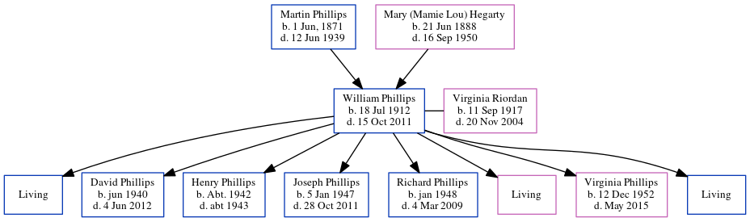

William Hiram Phillips 1912 - 2011
[ Home ] | [ Calendar ] | [ Surnames Index ] | [ Census Index ] | [ Family History ]A telegram delivery man per census at age 17 and the 3rd of 6 children of Martin Phillips and Mary (Mamie Lou) Hegarty, William Phillips, the grandfather of Michele Copp (née Phillips), was born in Atlanta, GA, USA on Jul 18, 19121,2,3,4,5,6,7,8 and married Virginia Riordan (with whom he had 8 children: William Marion, David Anthony, Henry, Joseph Raymond, Richard Vincent, Mary Celine, Virginia Frances and Edward Gerard, along with 3 surviving children) in Georgia, USA on Jun 1, 1936 (Fr. Rethans, Immaculate Conception Church).
During his life, he was living in Connelly Street, Atlanta, Georgia in 1912; in Atlanta Ward 3, Fulton, Georgia in 19209; in Atlanta, Fulton, Georgia in 19301; in Palm Bay, FL from 1935 to 19936; in Atlanta, Fulton, Georgia on Apr 1, 19402 and in 19503; in Glenwood Ave, Atlanta, Fulton, Georgia in 195610; and in Avon Park, FL in 19795.
He died on Oct 15, 2011 in Palm Bay, Brevard, Florida4,8 and was buried in Palm Bay, Brevard County, Florida, USA after Oct 15, 20118.
Parents
- Martin Eugene was born on Jun 1, 1871
- Mary (Mamie Lou) was born on Jun 21, 1888
Children
- David Anthony was born in Jun 1940
- Henry was born c. 1942
- Joseph Raymond was born on Jan 5, 1947
- Richard Vincent was born in Jan 1948
- Virginia Frances was born on Dec 12, 1952
Citations
- 1930 United States Federal Census Online publication - Provo, UT, USA: MyFamily.com, Inc., 2002.Original data - United States of America, Bureau of the Census. Fifteenth Census of the United States, 1930. Washington, D.C.: National Archives and Records Administration, 1930. T626, 2,667 rol
- 1940 United States Federal Census Ancestry.com Operations, Inc. (Age: 27; Marital Status: Married; Relation to Head of House: Son-in-law)
- 1950 United States Federal Census Ancestry.com Operations, Inc. (Department of Commerce. Bureau of the Census. 1913-1/1/1972. Population Schedules for the 1950 Census, 1950 - 1950. Washington, DC: National Archives at Washington, DC. Population Schedules for the 1950 Census, 1950 - 1950. NAID: 43290879. Records of the Bureau of the Census, 1790 - 2007, Record Group 29. National Archives at Washington, DC., Washington, DC.) (Relation to Head: Head; Marital Status: Married)
- Social Security Death Index Online publication - Provo, UT, USA: MyFamily.com, Inc., 2006.Original data - Social Security Administration. Social Security Death Index, Master File. Social Security Administration.Original data: Social Security Administration. Social Security Death Inde
- U.S. Public Records Index, Volume 1 Online publication - Provo, UT, USA: Ancestry.com Operations, Inc., 2010.Original data - Voter Registration Lists, Public Record Filings, Historical Residential Records, and Other Household Database Listings.Original data: Voter Registration Lists, Public
- U.S. Public Records Index, Volume 2 Online publication - Provo, UT, USA: Ancestry.com Operations, Inc., 2010.Original data - Voter Registration Lists, Public Record Filings, Historical Residential Records, and Other Household Database Listings.Original data: Voter Registration Lists, Public
- U.S. WWII Draft Cards Young Men, 1940-1947 Ancestry.com Operations, Inc.
- U.S., Find A Grave Index, 1600s-Current Ancestry.com Operations, Inc.
- 1920 United States Federal Census Online publication - Provo, UT, USA: MyFamily.com, Inc., 2005. For details on the contents of the film numbers, visit the following NARA web page: NARA. Note: Enumeration Districts 819-839 on roll 323 (Chicago City.Original data - United States of America
- U.S. City Directories, 1822-1995 Ancestry.com Operations, Inc.
Family Tree
Generated by ged2site. Last updated on Jun 6, 2024